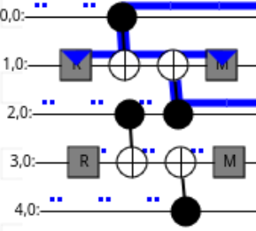

Automatic detector computation#
The tqec package implements a method to automatically compute detectors from a
given quantum circuit representing a quantum error corrected computation.
Difference from the main tqec package#
The implementation to automatically find detectors in a given quantum circuit representing
a quantum error corrected computation is currently kept as isolated from the tqec package
as possible and will very likely be outsourced into its own independent package in the future.
The implementation can be found in tqec.circuit.detectors and a few restrictions applies
specifically to the code in this sub-module:
it should be self-contained, or in other words it should not call code from the main
tqecpackage, with the exception of code withintqec.circuit.detectors,it should avoid unneeded dependencies. For that reason, the code in
tqec.circuit.detectorsdoes not usecirqas its intermediary representation but directly operates onstimdata-structures.
Concepts used through the sub-module#
A few core concepts are re-used through the whole sub-module. This section aims at presenting these core concepts in an accessible manner.
Terms that are conventionally used in quantum computing, such as “circuit”, will not be defined here.
Moments#
The concept of “moment” is central to the sub-module. A “moment” is a portion of a
quantum circuit that is located between two TICK instructions. Conventionally,
moments may end with a TICK instruction, but do not start with one.
This definition is close, but not equivalent, to the definition used by cirq. One of
the main difference is that cirq defines a moment as a sub-circuit of depth 1: no
instruction in the moment overlaps with another instruction in the same moment.
In the definition given above, there is no notion of depth, and even though TICK
instruction are generally used in stim such as the moment definition above
is equivalent to the definition used by cirq, this is not required.
For example, the circuit
R 0 1 2 3 4
TICK
CX 0 1 2 3
TICK
CX 2 1 4 3
TICK
M 1 3
DETECTOR(1, 0) rec[-2]
DETECTOR(3, 0) rec[-1]
M 0 2 4
DETECTOR(1, 1) rec[-2] rec[-3] rec[-5]
DETECTOR(3, 1) rec[-1] rec[-2] rec[-4]
OBSERVABLE_INCLUDE(0) rec[-1]
contains 4 moments.
Fragments#
Fragments are a collection of moments that check the following order:
zero or more moments exclusively composed of reset, annotation or noisy-gate instructions,
zero or more moments composed of “computation” instructions (anything that is not a measurement, a reset, a noisy gate or an annotation),
one or more moments exclusively composed of measurement, annotation or noisy-gate instructions.
The circuit provided in Moments contains 4 moments that form a fragment.
Note that the circuit
M 1 3
DETECTOR(1, 0) rec[-2]
DETECTOR(3, 0) rec[-1]
M 0 2 4
DETECTOR(1, 1) rec[-2] rec[-3] rec[-5]
DETECTOR(3, 1) rec[-1] rec[-2] rec[-4]
OBSERVABLE_INCLUDE(0) rec[-1]
also form a fragment!
Flows#
Stabilizers can propagate through a fragment, but can also be created or destroyed by it.
Let’s use the following quantum circuit to illustrate:
R 1 3
TICK
CX 0 1 2 3
TICK
CX 2 1 4 3
TICK
M 1 3
You can also check it interactively using crumble.
This quantum circuit can “propagate” a stabilizer, for example if a Z stabilizer
on qubit 2 is given as input, a Z stabilizer on qubit 2 is propagated
through:

The quantum circuit also “creates” propagation of stabilizers with its resets, as shown in the illustration below:
Here, the fragment is creating a Z0Z2 stabilizer: the Z Pauli string
comes out of the final moment of the fragment on qubits 0 and 2.
Quantum circuit can also “destroy” some incoming stabilizers with its measurements as shown below:

Here, the fragment is destroying an incoming Z0Z2 stabilizer.
These three kinds of stabilizer propagation are “flows”. A “flow” is describing the way a stabilizer propagates through a fragment.
Collapsing operations#
Collapsing operations are operations that are involved in the collapsing (i.e., “destruction”) or “creation” of flows.
Measurements and resets are the only collapsing operations.
Note that, by construction, collapsing operations can only be encountered at the boundaries (beginning/end) of a fragment.
Boundary stabilizers#
An important data-structure used in the package is BoundaryStabilizer. This
data-structure represents the state of a flow at the boundaries of a fragment.
It stores:
a Pauli string, representing the state of a flow that propagated from one boundary, just before encountering the collapsing operations of the other boundary,
a list of Pauli strings, each representing one of the collapsing operations that will be encountered by the propagated Pauli string,
a list of measurements that are involved (either as sources for a destruction flow or as sinks for a creation flow) in the flow propagation and that will be used later to know which measurements to include in the detectors.
Taking the above example, the following flow:
can be represented by a BoundaryStabilizer instance with the following attributes:
Z0Z1Z2for the stabilizer, as before encountering the measurement, the propagated stabilizer isZ0Z1Z2.[Z1, Z3]as collapsing operations, as the measurements present in the above circuit are performed in theZbasis, and on qubits1and3.a data-structure that will represent the measurement performed on qubit
1, as the only measurement that is taking part in the stabilizer propagation is this one.
As another example, the following flow:
can be represented by a BoundaryStabilizer instance that has exactly the same attributes
as the one described above.
To distinguish between these two BoundaryStabilizer (one representing a creation flow,
the other representing a destruction flow), they will be stored in a data-structure that
will differentiate creation and destruction flows: FragmentFlow (or FragmentLoopFlow).
Example#
See the accompanying notebook for an example of how to perform automatic detector computation: